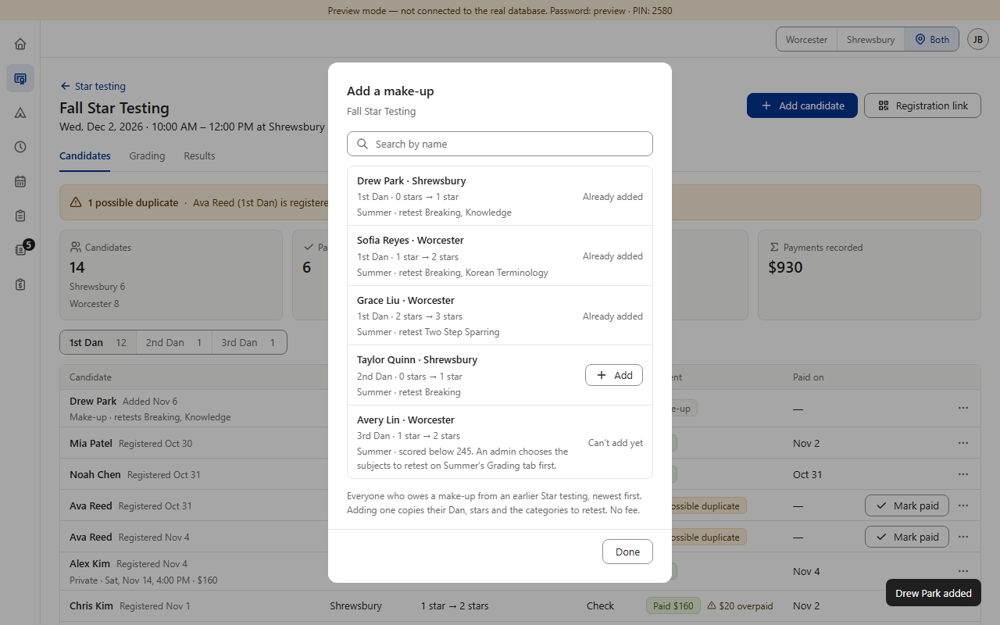
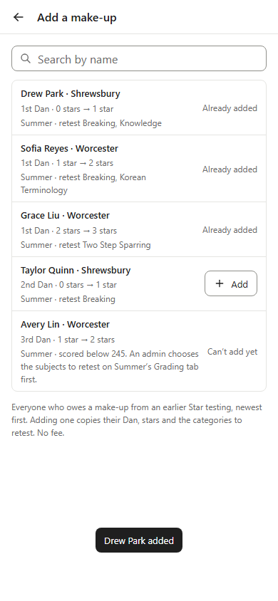
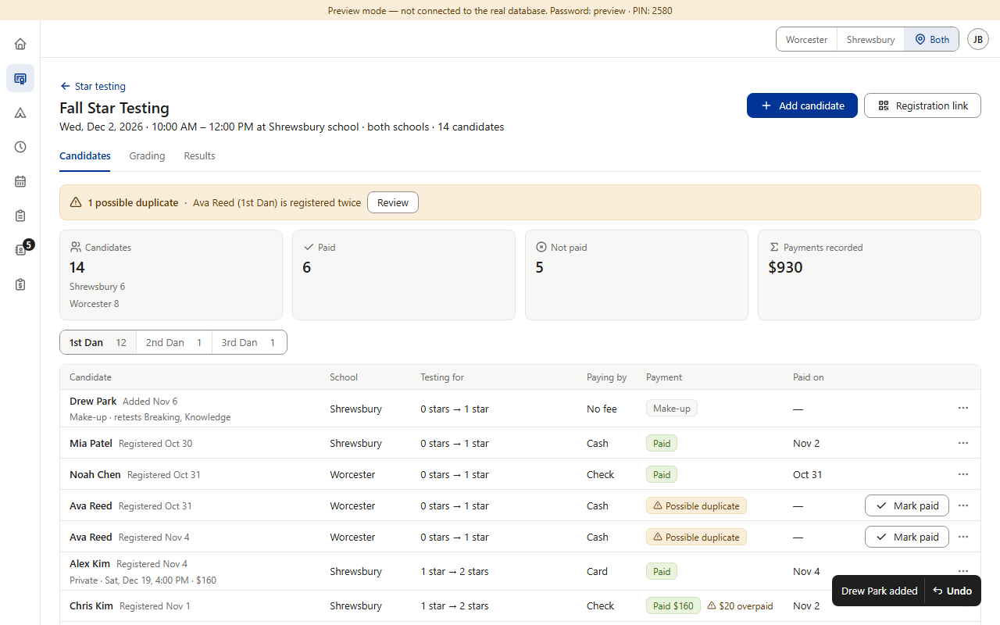
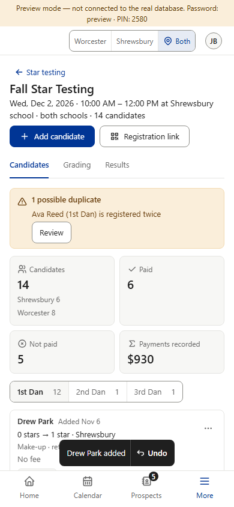
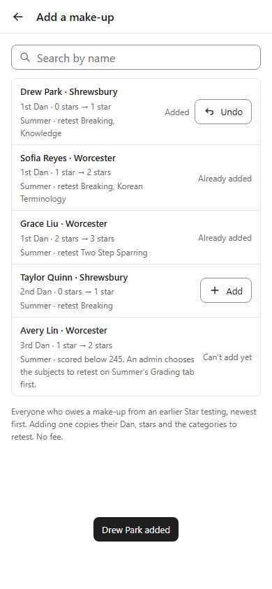
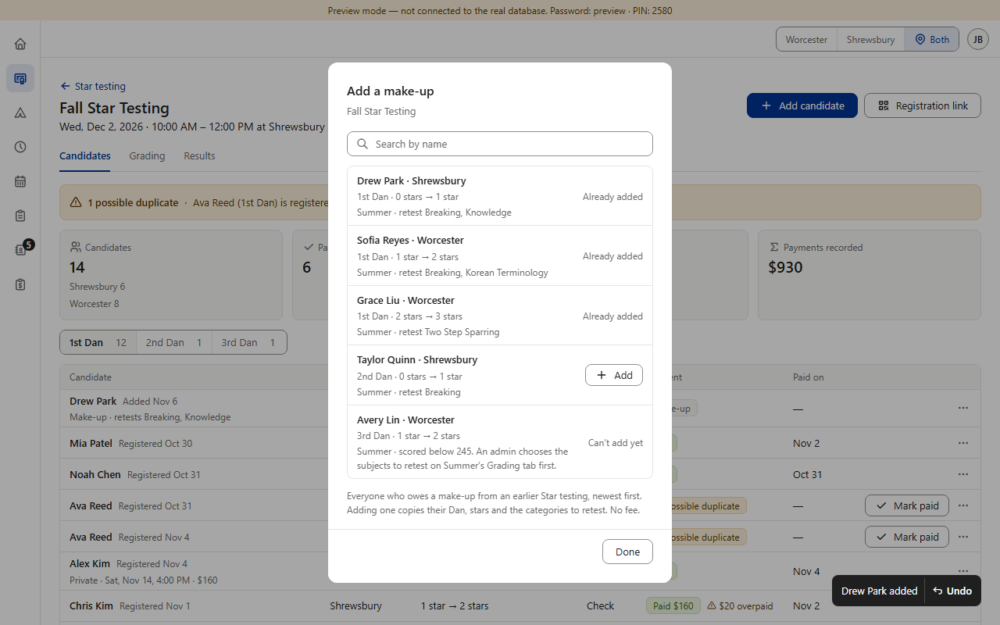
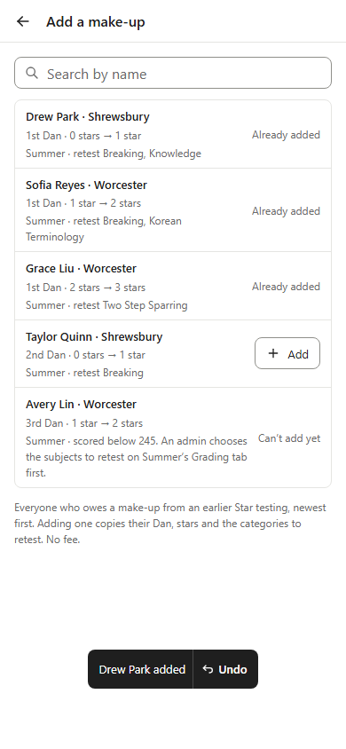

Star · R2-08 (2 of 2) — Undo after adding a make-up: which way? (choice for Jeffrey)
Today Star’s Add a make-up list stays open after Add, and the “Drew Park added” toast shows outside it. A dialog keeps the keyboard (Tab) inside itself, so a toast Undo there could be reached by mouse only — not by keyboard until the list is closed, and by then the 5 seconds are usually over. Three ways out. Undo (admins only; staff can’t delete a candidate, v0.110, so staff get no Undo in any option) deletes the new make-up row, as Add candidate’s Undo does, then says “Undone”. Both toast texts (“Private testing set”, “Drew Park added”) are still marked PROPOSAL in the code: these pictures are the first time they are shown for approval, and an OK here removes the PROPOSAL tags. Possible wording, Black Belt’s form: “Drew Park added · make-up from Summer” (“… added · make-up from <earlier testing>”), so it doesn’t read like Add candidate’s toast.
Today

PC 1280×800. Add on Drew Park: the list stays open (“Already added”), toast “Drew Park added”, no Undo.

Phone 390×844, touch (full-screen list).
(a) Recommended — close the list after Add

PC. The list closes (as Black Belt’s does), focus goes back to Add candidate, and “Drew Park added · ↶ Undo” shows over the event page, where Drew’s row is now first. After Undo, focus goes back to Add candidate.

Phone. Same: list closed, toast above the bottom bar.
Pros: Undo works by keyboard like every other toast; copies Black Belt (useMakeupPicker), so both sections behave the same. Cons: adding a second make-up means opening Add candidate → Make-up again.
(b) Keep the list open, Undo in the row
PC. Drew’s row says “Added” with an Undo button where “Already added” was; the toast stays “Drew Park added” without Undo. After Undo, focus stays on Drew’s row, whose button turns back into “Add”.

Phone.
Pros: several make-ups in a row without reopening; Undo is inside the dialog, so the keyboard reaches it, with no 5-second timer. Cons: a new look no other section has (Undo as a row button); how long the row Undo stays offered (until the list closes?) needs deciding.
(c) Keep it as it is today

PC. “Drew Park added · ↶ Undo” over the open list (as first drawn).

Phone.
Pros: smallest change; the list stays open. Cons: breaks the rulebook’s keyboard-only rule (§4 “Everything works with keyboard only”, WCAG 2.1.1): while the list is open, Undo can be clicked with a mouse but not reached with Tab.
Star testing · rolling check pass 1, Step A (plan OK’d 2026-11-06). Preview screenshots (fake database, admin, Fall Star Testing). The “After” column is drawn over the real page by a small script (mock-stepA.js) — nothing in the app was changed. Amber = what changes; green = the change. Tablet and 320 look like PC and phone here, so they aren’t repeated (A3 shows the toast at all four sizes).